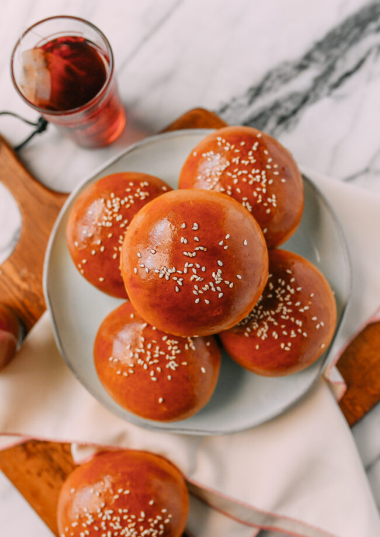

Chinese BBQ Pork Buns (Baked)

Chinese BBQ Pork Buns consist of soft milk bread and a savory filling of Chinese BBQ Pork. These buns can either be steamed or baked. Note: Steamed version uses a different dough method.
Ingredients
For the dough
- Heavy cream - 2/3 cups (room temperature)
- Milk - 1 cup (whole milk preferred, but you can use 2%, at room temperature
- Large egg - 1
- Sugar - 1/3 cup
- Cake flour - 1/2 cup(can be substituted with 1/2 cup of all purpose flour sifted with 1 tbsp of cornstarch)
- Bread flour - 3 1/2 cups (tap measuring cup to avoid air pockets)
- Active dry yeast or instant yeast- 1 tbsp
- Salt - 1 1/2 tsp
For the Chinese roast pork
- Boneless pork shoulder/pork butt (select a piece with some good fat on it) - 3 lbs
- Granulated white sugar - 1/4 cup
- Salt - 2 tsp
- Five spice powder - 1/2 tsp
- white pepper - 1/4 tsp
- Sesame oil - 1/2 tsp
- Shaoxing rice wine - 1 tbsp
- Soy sauce - 1 tbsp
- Hoisin sauce - 1 tbsp
- Molasses - 2 tbsp
- Red food coloring (optional) - 1/8 tsp
- Finely minced garlic - 3 cloves
- Maltose or honey - 2 tbsp
- Hot water - 1 tbsp
For the filling
- Vegetable oil - 2 tbsp
- Shallots - 1/2 cup
- Granulated sugar - 2 tbsp
- Light soy sauce - 2 tsp
- Oyster sauce - 2 tbsp
- Sesame oil - 1 1/2 tsp
- Dark soy sauce - 2 tsp
- Chicken stock - 3/4 cup
- All purpose flour - 2 tbsp
- Chinese roast pork, finely diced - 2 cups
To finish the buns
- Egg wash - 1 egg, beaten with 1 tbsp of water
- Sesame seeds (optional)- 1 tbsp
- Granulated sugar, dissolved in 1 tbsp of boiling water - 1 tbsp
Instructions
For the Chinese roast pork
- Cut the pork into long strips or chunks about 2 to 3 inches thick. Don't trim any excess fat, as it will render off and add flavor.
- Combine the sugar, salt, five spice powder, white pepper, sesame oil, wine, soy sauce, hoisin sauce, molasses, food coloring (if using), and garlic in a bowl to make the marinade (i.e. the BBQ sauce).
- Reserve about 2 tablespoons of marinade and set it aside. Rub the pork with the rest of the marinade in a large bowl or baking dish. Cover and refrigerate overnight, or at least 8 hours. Cover and store the reserved marinade in the fridge as well.
- Preheat your oven to 'bake' at 475 F (246 C) with a rack positioned in the upper third of the oven. (If you only have a convection oven, keep in mind the oven not only heats more quickly, your char siu will roast faster than what we have described here).
- Line a sheet pan with foil and place a metal rack on top. Using the metal rack keeps the pork off of the pan and allows it to roast more evenly, like it does in commercial ovens described above. Place the pork on the rack, leaving as much space as possible between pieces. Pour 1 ½ cups water into the pan below the rack. This prevents any drippings from burning or smoking.
- Transfer the pork to your preheated oven. Roast for 25 minutes, keeping the oven setting at 475 F for the first 10 minutes of roasting, and then reduce your oven temperature to 375 F (190 C).
- After 25 minutes, flip the pork. If the bottom of the pan is dry, add another cup of water. Turn the pan 180 degrees to ensure even roasting. Roast another 15 minutes. Throughout the roasting time, check your char siu often (every 10 minutes) and reduce the oven temperature if it looks like it is burning!
- Meanwhile, combine the reserved marinade with the maltose or honey (maltose is very viscous-you can heat it up in the microwave to make it easier to work with) and 1 tablespoon hot water. This will be the sauce you'll use for basting the pork.
- After 40 minutes of total roasting time, baste the pork, flip it, and baste the other side as well. Roast for a final 10 minutes.
- By now, the pork has cooked for 50 minutes total. It should be cooked through and caramelized on top. If it’s not caramelized to your liking, you can turn the broiler on for a couple minutes to crisp the outside and add some color/flavor. Be sure not to walk away during this process, since the sweet char siu BBQ sauce can burn if left unattended. You can also use a meat thermometer to check if the internal temperature of the pork has reached 160 degrees F. (Update: USDA recommends that pork should be cooked to 145 degrees F with a 3 minute resting time)
- Remove from the oven and baste with the last bit of reserved BBQ sauce. Let the meat rest for 10 minutes before slicing, and enjoy!
For the rest
- In the bowl of a stand mixer fitted with the dough hook attachment, add the dough ingredients in the following order. Start with the room temperature heavy cream, milk, and egg. Then add the sugar, cake flour, bread flour, yeast, and salt, in that order.
- Turn the mixer on to the lowest setting to bring the dough together. When a scraggly dough has formed, knead on low speed for 15 minutes. If needed, turn off the mixer to bring the dough together with a rubber spatula. Alternatively, you can stir all the dough ingredients together with a wooden spoon in a large mixing bowl, and then knead by hand for 20 minutes.
- The dough should stick to the bottom of the bowl, but should not stick to the sides. If you're in a humid climate, and the dough is sticking to the sides of the mixing bowl, add more flour 1 tablespoon at a time until it comes together.
- Shape the dough into a ball, and cover with an overturned plate or damp towel. Place in a warm spot to proof for 75-90 minutes, or until the dough doubles in size. (A good proofing environment is a closed microwave, with a mug of hot boiled water next to the bowl.)
- While that's happening, make the meat filling. Be sure to dice the pork finely rather than in large chunks, so the buns are easier to fill. Heat 2 tablespoons oil in a wok over medium heat. Add the shallot/onion and stir-fry for 2 minutes. Add the sugar, soy sauce, oyster sauce, sesame oil, and dark soy. Stir and cook until it begins to bubble. Add the chicken stock and flour. Reduce the heat to medium low and cook, stirring, for 2-3 minutes, until thickened. Stir in the roast pork.
- Turn off the heat, and remove the filling from the wok onto a large plate. Separate the filling into 16 roughly equal piles, to ensure you get an even amount in each bun. Set aside to cool.
- After the first proof, knead the dough for another 5 minutes to punch the air out. Dump it onto a lightly floured surface, and shape it into a ball.
- Cut it into 16 equal pieces (in half, then quarters, then in quarters again). The best way to ensure you get evenly sized buns is to weigh the entire dough ball, divide the weight by 16, and then weigh out each individual piece to match that weight.
- To shape the buns, knead each individual dough ball to punch out any air bubbles and smooth it out. Roll it into a 4-inch circle, with the center slightly thicker than the outer edges.
- While assembling the buns, be sure to keep your hands clean. Any grease from the filling on your fingers will make it very difficult to seal them.
- Add 1 portion of filling to the bun, and crimp it closed, making sure it's tightly sealed. Lay them seam side down on baking sheets lined with parchment paper, about 3 inches apart.
- Cover with a clean towel and allow to rise at room temperature for another hour.
- Arrange two racks in the top and bottom thirds of the oven, and preheat to 400°F/200°C. Brush the buns with egg wash, and sprinkle them with sesame seeds, if using.
- Transfer the buns to the oven, and immediately turn down the temperature to 350°F/175°C. Bake for 22-25 minutes, or until golden brown.
- Remove from the oven and immediately brush the buns with the sugar syrup while they're still hot. Cool, and enjoy!